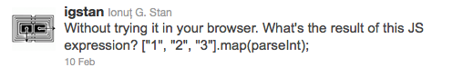

About this Article
Date Released:
Monday, December 10 2012 12:02 AMWhat's the result of [1, 2, 3].map(parseInt)
[1, 2, 3].map(parseInt)를 실행하면 어떤 결과가 나올까?

결과는 [1, Nan, Nan]이 나오는데 원인은 map 함수의 구현과 가변 인자 때문에 발생한다.
먼저 아래 식에 실행 결과를 확인해 보자
['1', '2', '3'].map( function(v, i, o){
return parseInt(v)
}; // [1, 2, 3]
map 함수에 인자로 사용된 익명함수는 인자를 parseInt함수로 전달만 하기 때문에 제거가 가능하다.
위 식을 아래와 같이 수정 후 결과를 확인해 보자.
['1', '2', '3'].map( parseInt ); // [1, NaN, NaN]
결과가 이상하지 않은가? 이제부터 한 가지씩 이유를 살펴보자.
먼저 Array.prototype.map 함수는 이터레이터(각 원소를 순회하는 함수)를 받아서 새로운 array를 반환하는 메서드다.
사용법을 살펴보자.
[1, 2, 3].map( function(v, i, o){
return v * 2;
}); // [2, 4, 6]
결과는 각 인자에 2가 곱해지 [2, 4, 6]이된다.
이터레이터 함수를 살펴 보면 조금 특이한게 있는데 인자를 3개 받는다.
- 첫번째 인자는 원소의 값이다
- 두번째 인자는 원소의 index다
- 세번째 인자는 array 자신이다
다음으로 parseInt 함수를 살펴보자.
parseInt 함수는 문자열을 받아서 문자열에 해당하는 숫자를 반환하는 함수다.
2개의 인자를 받으며 첫번째 인자는 파싱할 문자열이고 두번째 인자는 기수다.
parseInt('123') // 123
parseInt('123', 8) // 83
parseInt('123', 1) // NaN
이제 진짜 문제의 원인인 Array.prototype.map 함수의 구현을 살펴보자.
구현을 살펴 보면 callback.call 구문을 확인할 수 있다.
// Production steps of ECMA-262, Edition 5, 15.4.4.19
// Reference: http://es5.github.com/#x15.4.4.19
if (!Array.prototype.map) {
Array.prototype.map = function(callback, thisArg) {
...
while(k < len) {
...
mappedValue = callback.call(T, kValue, k, O);
...
...
return A;
};
}
콜백 메서드를 호출하는 부분에 주목하자. 왜 callback() 이 아니라 callback.call() 일까?
자바스크립트는 함수를 실행 할 수 있는 다양한 방법을 제공한다.
함수 호출 연산자인 ‘()’를 통해서도 함수를 호출 할 수 있으며 Function.prototype.call 혹은 Function.prototype.apply를 사용해서도 함수를 호출할 수 있다.
call, apply 메서드를 사용하면 함수의 실행 컨택스트를 변경시키거나 함수의 인자를 변경하는 등 다양한 방법으로 함수의 호출를 조작할 수 있다.
이를 parseInt 함수에 적용해 보자.
parseInt('10') // 결과가 10이 된다는 것은 위에서 살펴봤다.
parseInt.call(null, '10') // 결과는 어떻게 될까? 역시 10이다.
parseInt.call(null, '10', 1) // 결과는 어떻게 될까? 결과는 NaN이다.
parseInt 함수는 인자를 2개 받는 함수인데 두번째 인자로 전해진 기수 1에 대해서 표현할 방법을 찾이 못해서 NaN을 결과로 반환 한 것이다.
이제 결론이다.
- map 함수에 콜백이 전달받는 인자가 3개라는 것을 살펴봤다.
- parseInt 함수가 인자를 2개 받고 2번째 인자에 잘못된 값이 들어오면 NaN을 반환하는 것을 살펴봤다.
- map 구현부에 콜백함수를 실행하는 구분은 다음과 같다. callback.call(T, kValue, k, O)
위 사실을 종합해서 ['1', '2', '3'].map(parseInt)의 실행 과정을 풀어보면 다음과 같다.
// step. 1
parseInt.call(null, 1, 0, null) // 1
// step. 2
parseInt.call(null, 2, 1, null) // NaN
// step. 3
parseInt.call(null, 3, 1, null) // NaN